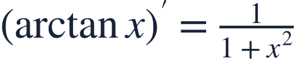
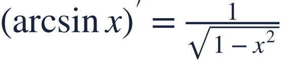
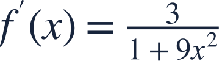
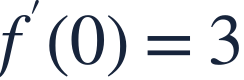
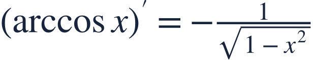
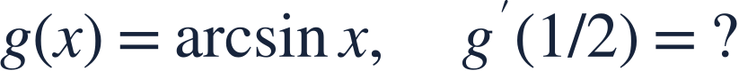

Inverse trigonometric derivatives
역삼각함수 미분
Inverse trigonometric derivatives are algebraic expressions with specific domains.
역삼각함수의 도함수는 정의역 조건을 가진 대수식입니다.
Inverse trigonometric derivatives are algebraic expressions with specific domains.
역삼각함수의 도함수는 정의역 조건을 가진 대수식입니다.

Arctan is an inverse function, not the reciprocal of tangent.
arctan은 역함수이며 탄젠트의 역수가 아닙니다.

Use the inverse-trig rule on the outside and the chain rule on the inside.
바깥에는 역삼각함수 공식을, 안에는 연쇄법칙을 적용합니다.
Name the inner function to avoid losing its coefficient.
안의 함수를 정해 계수를 빠뜨리지 않도록 합니다.

Square the entire inner expression in the denominator.
분모에서는 안의 식 전체를 제곱합니다.

The slope is positive; arctangent is increasing.
기울기가 양수이므로 아크탄젠트는 증가합니다.

For arcsin, the derivative denominator vanishes at the domain endpoints.
arcsin의 정의역 끝점에서는 도함수의 분모가 0입니다.

Check the derivative domain before substituting.
도함수의 정의역을 확인한 뒤 대입하세요.